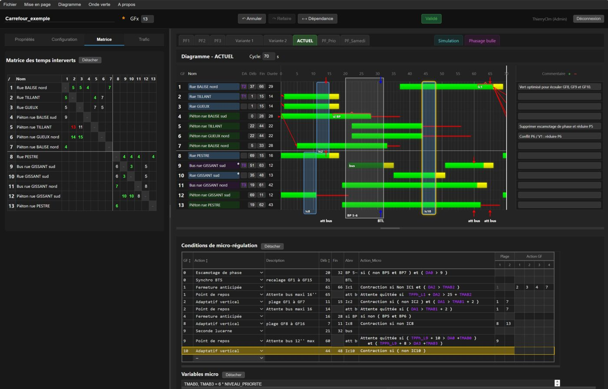
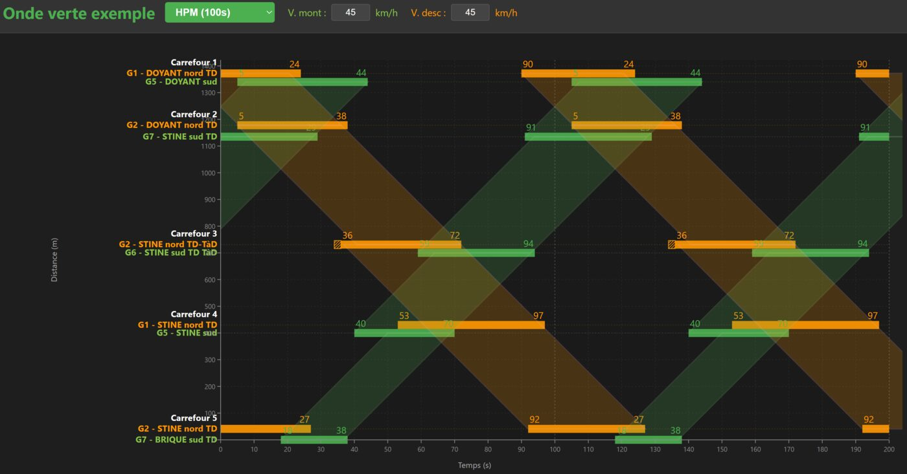

Concevoir le diagramme de feux d'un carrefour
TraCflux réunit sur un même écran les groupes de feux, la matrice des temps interverts et le diagramme temporel du cycle. Chaque conflit avec la matrice est signalé en direct, pendant que l'on déplace les verts. Un projet peut porter plusieurs plans de feux (multiprogrammation), associés chacun à un jeu de trafic : heure de pointe du matin, du soir, heures creuses…
Le modèle combine gestion par phases et par groupes de feux : le phasage reste disponible, mais chaque groupe garde ses propres instants d'ouverture et de fermeture. Les chevauchements partiels et la micro-régulation fine s'expriment ainsi directement.
Micro-régulation et priorité bus
- Seconde lucarne, escamotage de phase ou de groupe, flèche d'anticipation.
- Adaptatif vertical, fermeture et ouverture anticipées, point de repos.
- Variables propres à la priorité bus : délai d'approche, temps maxi d'attente bus, allongement de vert.
- Simulation du diagramme tel qu'il tourne une fois les actions activées, avec vérification des conflits.
Un assistant pour dégrossir le plan de feux
À partir des trafics, l'assistant repère le chemin critique, calcule le cycle minimal et le cycle de Webster selon le Guide des carrefours à feux du CERTU, répartit les verts au prorata des demandes et propose adaptatifs verticaux, fermetures anticipées et points de repos bus. Le concepteur garde la main sur chaque choix.
Onde verte : coordonner les carrefours d'un axe

Le module Onde verte place sur un diagramme espace-temps les carrefours conçus dans TraCflux et calcule les bandes passantes en sens montant et descendant.
Reprendre les études existantes
TraCflux importe les projets Excel et HTM, et propose un import des projets DiagFeux (.dfe), le logiciel du CERTU qui n'est plus maintenu. Cet import est encore une ébauche : le plan importé est une base de reprise à vérifier. Les diagrammes s'exportent en PNG et en PDF pour les dossiers et les comités.
Sans installation, et vos données restent chez vous
- S'ouvre dans le navigateur, sur Windows, macOS et Linux : rien à faire valider par une DSI.
- Installable comme une application et utilisable hors connexion.
- Aucun serveur : les projets restent sur votre poste.
- Libre et open source, sans compte ni abonnement.